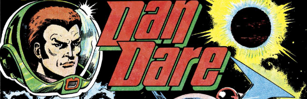

It's like Star Trek, except they kill all the aliens.
Art by Massimo Belardinelli
| Story Title | Parts | Pages | w indicates a wraparound coverCovers | Year(s) | Issues | Writer | Artist | Colourist | Letterer |
|---|---|---|---|---|---|---|---|---|---|
| [The Biogs] | 11 | 55 | 4: Carlos Ezquerra 7: Massimo Belardinelli 11: Brian Bolland 3 | 1977 | Reprints: FCBD5‑QR (partial: ep.1) http://goo.gl/V6i8L71-11 | 1: Ken Armstrong, Pat Mills 2‑11: Kelvin Gosnell various… | Massimo Belardinelli | <-- 22pp, [b&w] | 1‑2, 5: Bill Nuttall 3‑4, 5‑10: Jack Potter 9, 11: Peter Knight various |
| [Hollow World] | 12 | 60.5 | 12: Mike Western 1 | 1977 | 12-23 | Steve Moore | Massimo Belardinelli | <-- 24pp, [b&w] | John Aldrich: 1, 5 Peter Knight: 1, 3‑7, 9‑10 Bill Nuttall: 2, 10 J. Swain: 3 Tony Jacob: 6 Tom Frame: 8 Jack Potter: 8‑9 John Aldrich: 11‑12 various |
| The Curse of Mytax | 1 | 10 | Gerry Woods 1 | 1977 | 2KA'78 | unknown | Massimo Belardinelli | <-- | unknown |
| [Legion] | 6 | 31 | 0 | 1977 | 28-33 | Gerry Finley-Day | Dave Gibbons | <-- 12pp, [b&w] | Dave Gibbons |
| [Greenworld] | 2 | 10 | 0 | 1977 | 34-35 | Gerry Finley-Day | Dave Gibbons: 1‑2 Brian Bolland: 2 various | <-- 4pp, [b&w] | Dave Gibbons |
| [Star Slayer] | 16 | 67.5 | 45: Brian Bolland [body], face by Dave Gibbons 1 | 1977-1978 | Reprints: FCBD5 (partial: ep.1)36-51 | Gerry Finley-Day | Dave Gibbons Massimo Belardinellivarious | <-- 26pp, [b&w] | Dave Gibbons |
| [Doppelganger] | 4 | 17 | 0 | 1978 | 52-55 | Chris Lowder | Dave Gibbons | <-- 4pp, [b&w] | Dave Gibbons |
| [Waterworld] | 5 | 22.5 | 0 | 1978 | 56-60 | Chris Lowder | Dave Gibbons | <-- 3pp, [b&w] | Dave Gibbons |
| Nightmare Planet | 3 | 12 | 0 | 1978 | 61-63 | Chris Lowder | Brian Lewis | [b&w] | Steve Potter |
| Ice Planet | 3 | 12 | 0 | 1978 | 64-66 | Gerry Finley-Day | Dave Gibbons | [b&w] | Dave Gibbons |
| [Visco] | 1 | 12 | 0 | 1978 | SFS1 | Garry Leach | Garry Leach | [grayscale] | John Aldrich |
| Garden of Eden | 6 | 27 | 0 | 1978 | 67-72 | Chris Lowder | Dave Gibbons | [b&w] | Dave Gibbons |
| Mutiny | 6 | 26 | 0 | 1978 | 73-78 | Chris Lowder | Dave Gibbons | [b&w] | Dave Gibbons |
| The Doomsday Machine | 7 | 42 | 81: Dave Gibbons 1 | 1978 | 79-85 | 1‑3: Roy Preston as Henry Miller 3‑7: Nick Landau 4‑7: Roy Preston various | Trevor Goring, Garry Leach: 1‑6 Dave Gibbons: 7 various | [b&w] | Jack Potter: 1 Peter Knight: 2, 4, 6‑7 Bill Nuttall: 3 Steve Potter: 5 various |
| [Country of the Blind] | 1 | 10 | 0 | 1978 | 2KA'79 | unknown | unknown | [monochrome] | unknown |
| [The Lost Worlds] | 1 | 12 | Kevin O'Neill [Repeated on back cover.]1 | 1978 | DDA'79 | unknown | Ian Kennedy | <-- | unknown |
| [Dare to Dare] | 1 | 8 | 0 | 1978 | DDA'79 | unknown | unknown | [b&w] | unknown |
| Servant of Evil | 26 | 125 | 101: Dave Gibbons 110: Dave Gibbons 115: Dave Gibbons 123: Dave Gibbons 4 | 1979 | 100-107,109-126 | Tom Tully | Dave Gibbons | <-- 1pp, [b&w] | Dave Gibbons |
| [Taurs XII] | 1 | 10 | 0 | 1979 | 2KA'80 | unknown | Rod Vass | [monochrome] | unknown |
| [Robo-Pirates] | 1 | 12 | Kevin O'Neill [Repeated on back cover.]1 | 1979 | DDA'80 | unknown | unknown | <-- | unknown |
A reimagining.Dan Dare 3000AD | 1 | 2 | 0 | 1997 | 1034-S | David Bishop, Steve MacManusvarious | Kevin Walker | <-- | Tom Frame |
| >> Text Stories << | |||||||||
| The Invisible Death | 1 | 4 | 0 | 1978 | DDA'79 | unknown | unknown | [b&w] | n/a |
| The Planet of Frozen Fear | 1 | 3 | 0 | 1979 | SFS2 | unknown | unknown | [b&w] | n/a |
| >> Posters << | |||||||||
2000AD Futuregraph.Dan Dare's Space Fort | 1 | 1 | 0 | 1977 | Reprints: DDA'7936 | unknown | Adrian Beeton, Dave Gibbons [reprint] various | <-- | unknown |
2000AD Futuregraph.Dan Dare's Eagle Craft | 1 | 1 | 0 | 1677 | Reprints: 2KA'7938 | unknown | Adrian Beeton, Dave Gibbons [reprint] various | <-- | unknown |
Star Pin‑Up.The Mekon | 1 | 1 | 0 | 1978 | SFS1 | Alan Vince | Keith Watson | <-- | n/a |
Star Pin‑Up.Dan Dare's Space Fort | 1 | 1 | 0 | 1978 | 81 | n/a | Brian Lewis | <-- | n/a |
Star Pin‑Up.Dan Dare | 1 | 1 | 0 | 1978 | 104 | n/a | Dave Gibbons | <-- | n/a |
| >> Features << | |||||||||
| Frank Bellamy and the Dan Dare Strip | 1 | 2 | 0 | 1978 | SFS1 | Alan Vince | Frank Bellamy | <-- | n/a |
| Dan Dare Annual | 1 | 1 | 0 | 1978 | DDA'79 | editorial | Dave Gibbons | [b&w] | n/a |
| Dan Dare Future Quiz | 1 | 2 | 0 | 1978 | DDA'79 | editorial | library / reprint | [b&w] | n/a |
| 10 Ways to Destroy the World | 1 | 1 | 0 | 1980 | 2KA'81 | [The Mekon] | Dave Gibbons | [b&w] | n/a |
| Dan Dare: The TV Series - GROUNDED | 1 | 3 | 0 | 1981 | 197 | editorial | Reprints from Ewins, McCarthy & Bolland various | [b&w] | n/a |
| ATV Daren't Dare! | 1 | 0.5 | 0 | 1981 | 206 | editorial | unknown | [b&w] | n/a |
From [Features] | ReviewsJudge Death vs. The Mekon | 1 | 2 | 0 | 1985 | 2KA'86 | editorial | reprints | [b&w] | n/a |
Subtitled: "Dare to be Different".Comic Icons: Dan Dare | 1 | 4 | 0 | 2017 | M390 | Stephen Jewell | reprints & designs | <-- | n/a |
| year | episodes | pages |
| 1977 | 42 | 210 |
| 1978 | 44 | 224.5 |
| 1979 | 28 | 147 |
| 1980 | 0 | 0 |
| 1981 | 0 | 0 |
| 1982 | 0 | 0 |
| 1983 | 0 | 0 |
| 1984 | 0 | 0 |
| 1985 | 0 | 0 |
| 1986 | 0 | 0 |
| 1987 | 0 | 0 |
| 1988 | 0 | 0 |
| 1989 | 0 | 0 |
| 1990 | 0 | 0 |
| 1991 | 0 | 0 |
| 1992 | 0 | 0 |
| 1993 | 0 | 0 |
| 1994 | 0 | 0 |
| 1995 | 0 | 0 |
| 1996 | 0 | 0 |
| 1997 | 1 | 2 |
| 1998 | 0 | 0 |
| 1999 | 0 | 0 |
Comic strip data (excludes other content):